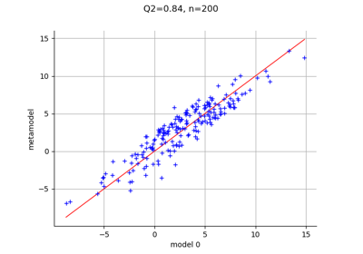
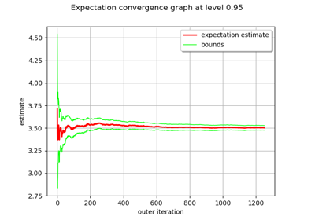
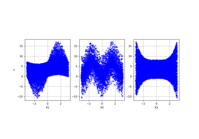
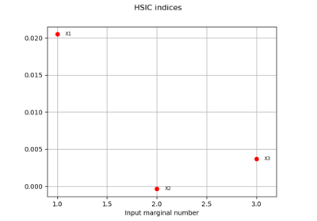
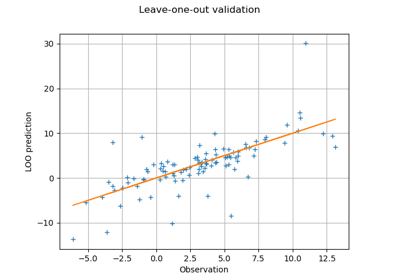

The Ishigami function¶
The Ishigami function of Ishigami & Homma (1990) is recurrent test case for sensitivity analysis methods and uncertainty.
Let  and
and  (see Crestaux et al. (2007) and Marrel et al. (2009)). We consider the function
(see Crestaux et al. (2007) and Marrel et al. (2009)). We consider the function
![g(X_1,X_2,X_3) = \sin(X_1)+a \sin (X_2)^2 + b X_3^4 \sin(X_1)]()
for any ![X_1,X_2,X_3\in[-\pi,\pi]]()
We assume that the random variables  are independent and have the uniform marginal distribution in the interval from
are independent and have the uniform marginal distribution in the interval from  to
to  :
:
![X_1,X_2,X_3\sim \mathcal{U}(-\pi,\pi).]()
Analysis¶
The expectation and the variance of  are
are

and
![V(Y) = \frac{1}{2} + \frac{a^2}{8} + \frac{b^2 \pi^8}{18} + \frac{b\pi^4}{5}.]()
The Sobol’ decomposition variances are
![V_1 = \frac{1}{2} \left(1 + b\frac{\pi^4}{5} \right)^2, \qquad
V_2 = \frac{a^2}{8}, \qquad
V_{1,3} = b^2 \pi^8 \frac{8}{225}]()
and  .
.
This leads to the following first order Sobol’ indices:
![S_1 = \frac{V_1}{V(Y)}, \qquad S_2 = \frac{V_2}{V(Y)}, \qquad S_3 = 0,]()
and the following total order indices:
![ST_1 = \frac{V_1+V_{1,3}}{V(Y)}, \qquad ST_2 = S_2, \qquad ST_3 = \frac{V_{1,3}}{V(Y)}.]()
The third variable  has no effect at first order (because
has no effect at first order (because  it is multiplied
by
it is multiplied
by  ), but has a total effet because of the interactions with
), but has a total effet because of the interactions with  .
On the other hand, the second variable
.
On the other hand, the second variable  has no interactions which implies
that the first order indice is equal to the total order indice for this input variable.
has no interactions which implies
that the first order indice is equal to the total order indice for this input variable.
References¶
Ishigami, T., & Homma, T. (1990, December). An importance quantification technique in uncertainty analysis for computer models. In Uncertainty Modeling and Analysis, 1990. Proceedings., First International Symposium on (pp. 398-403). IEEE.
Sobol’, I. M., & Levitan, Y. L. (1999). On the use of variance reducing multipliers in Monte Carlo computations of a global sensitivity index. Computer Physics Communications, 117(1), 52-61.
Saltelli, A., Chan, K., & Scott, E. M. (Eds.). (2000). Sensitivity analysis (Vol. 134). New York: Wiley.
Crestaux, T., Martinez, J.-M., Le Maitre, O., & Lafitte, O. (2007). Polynomial chaos expansion for uncertainties quantification and sensitivity analysis. SAMO 2007, http://samo2007.chem.elte.hu/lectures/Crestaux.pdf.
Load the use case¶
We can load this model from the use cases module as follows :
>>> from openturns.usecases import ishigami_function
>>> # Load the Ishigami use case
>>> im = ishigami_function.IshigamiModel()
API documentation¶
- class IshigamiModel
Data class for the Ishigami model.
Examples
>>> from openturns.usecases import ishigami_function >>> # Load the Ishigami model >>> im = ishigami_function.IshigamiModel()
- Attributes:
- dimThe dimension of the problem
dim = 3
- aConstant
a = 7.0
- bConstant
b = 0.1
- X1Uniform distribution
First marginal, ot.Uniform(-np.pi, np.pi)
- X2Uniform distribution
Second marginal, ot.Uniform(-np.pi, np.pi)
- X3Uniform distribution
Third marginal, ot.Uniform(-np.pi, np.pi)
- distributionXComposedDistribution
The joint distribution of the input parameters.
- ishigamiSymbolicFunction
The Ishigami model with a, b as variables.
- modelParametricFunction
The Ishigami model with the a=7.0 and b=0.1 parameters fixed.
- expectationConstant
Expectation of the output variable.
- varianceConstant
Variance of the output variable.
- S1Constant
First order Sobol index number 1
- S2Constant
First order Sobol index number 2
- S3Constant
First order Sobol index number 3
- S12Constant
Second order Sobol index for marginals 1 and 2.
- S13Constant
Second order Sobol index for marginals 1 and 3.
- S23Constant
Second order Sobol index for marginals 2 and 3.
- S123Constant
- ST1Constant
Total order Sobol index number 1.
- ST2Constant
Total order Sobol index number 2.
- ST3Constant
Total order Sobol index number 3.
Examples based on this use case¶


Create a polynomial chaos for the Ishigami function: a quick start guide to polynomial chaos

Polynomial chaos expansion cross-validation



Evaluate the mean of a random vector by simulations



The HSIC sensitivity indices: the Ishigami model

Compute leave-one-out error of a polynomial chaos expansion